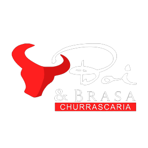

Depois do sucesso no Agreste do Estado, os empresários César Ongaratto e Valdemir Baldissera decidiram mudar de Boi & Preto para BOI & BRASA, sendo reconhecida atualmente como uma das melhores redes de churrascaria do Recife, seguindo sempre com qualidade e tradição.
Ambientes confortáveis e climatizados em todas as unidades, aliados ao som de um piano.
Disponibilizamos também a todos nossos frequentadores, estacionamento com serviço de manobrista e uma equipe especialmente treinada para lhe proporcionar momentos únicos.
Navegue no menu acima para conhecer nosso cardápio.